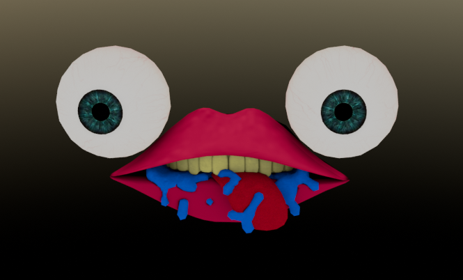
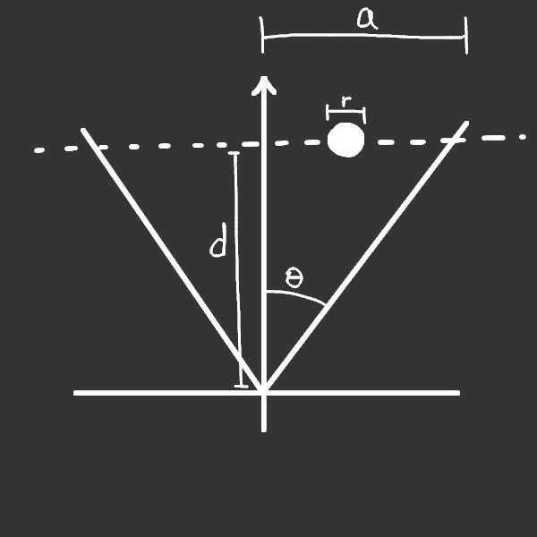

A friend asked me for help with this idea and I kinda just did the entire thing myself. I tried to create something spooky and not janky, so I came up with the idea that it's always watching you, and it moves when you can't see it.
I might have gone a little overboard with the 3d model.
It's not a mob, but simply a 3d model that is translated and rotated around the Minecraft world.
There are two things that would make it invisible: not being in the field of view and being hidden behind something in the world.
It's easy enough to determine if it's hidden behind something because Onix has a built-in raycast function that returns collisions with the world. So 8 raycasts are done, coming from the player and going to the ends of the model. If all of them hit something before they get to the model, it is hidden behind something.
Determining if it is in the field of view is harder and requires some math.
First, everything is rotated so that the camera is looking down +z with the model still in the same position relative to the camera.
I'll imagine the model as a sphere.
One way to do this pick a some amount of points on the sphere and find their position on the screen. If all of the points are out of the bounds of the screen, you could assume that the model isn't visible.
However, I did it slightly differently. What I'm about to explain is less expensive than that but also less accurate.
First I project only the center point of the sphere onto the screen. Then I try to find roughly how big the sphere will be on the screen. This is hard to do, because as a sphere moves towards the edge of the screen, it gets distorted and does not look like a circle as you would expect. The method below only finds the size of the sphere in one dimension of the screen: if you use the horizontal FOV, it gives the horizontal size, while vertical FOV gives the vertical size. However, some sort of diagonal size might be the largest, which makes this not so accurate. I ended up doing both horizontal and vertical and just taking the largest, then multiplying by some value > 1 to give it some room for error because I can do that in this case.
Here's a drawing representing the situation. \(\theta\) is half the fov (either vertical or horizontal), \(d\) is the distance to the center of the sphere on the z axis, \(a\) is the size of the projection plane at that distance (this will be an unknown value), and \(r\) is the 3d radius of the sphere.
The fraction of the screen taken up by the sphere on this axis (vertical or horizontal) is given by \(\frac{r}{a}\). This is proportional to the size of the sphere on the screen in pixels (horizontal or vertical) depending on the total number of pixels in that dimension of the screen: \(\frac{p}{t}\).
We now have two equations: \(\frac{r}{a}=\frac{p}{t}\) and \(a=d\cdot tan(\theta)\) (which comes from the drawing above). We want to solve for \(p\).
$${ \frac{r}{a}=\frac{p}{t}\ }$$ $${ \frac{rt}{p} = a }$$ $${ \frac{rt}{p}=d \cdot tan(\theta) }$$ $${ p=\frac{rt}{d \cdot tan(\theta)} }$$This value \(p\) now represents either the horizontal or vertical size of the sphere on the screen, whichever is larger (I calculated both and look the largest). So to roughly see if any of the sphere is visible on the screen, you can create 4 (or more) points, each \(p\) pixels away from the previously calculated center of the sphere in screen coordinates. If any one of them is within the bounds of the screen's dimensions, the sphere is visible.